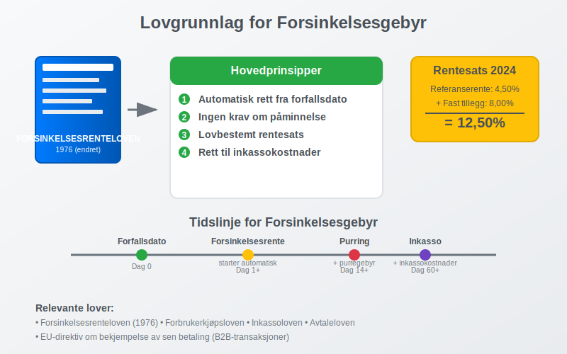
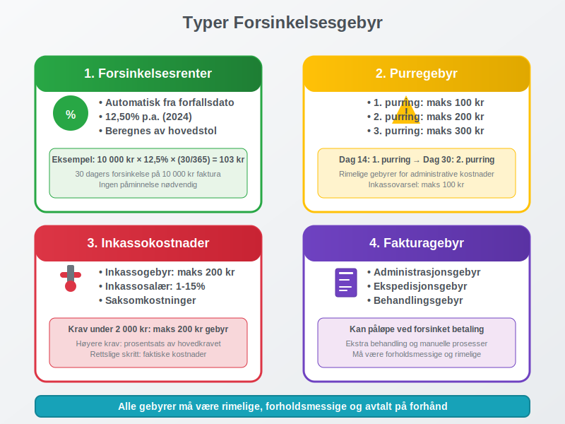
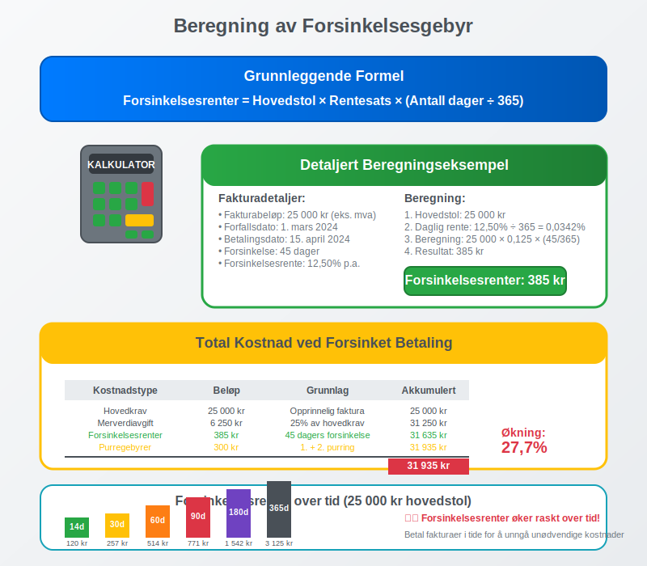
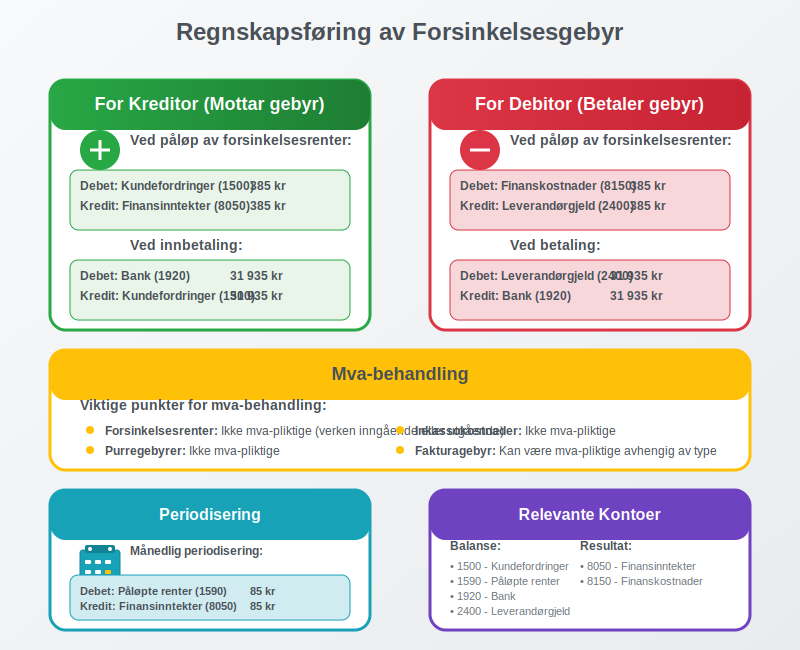
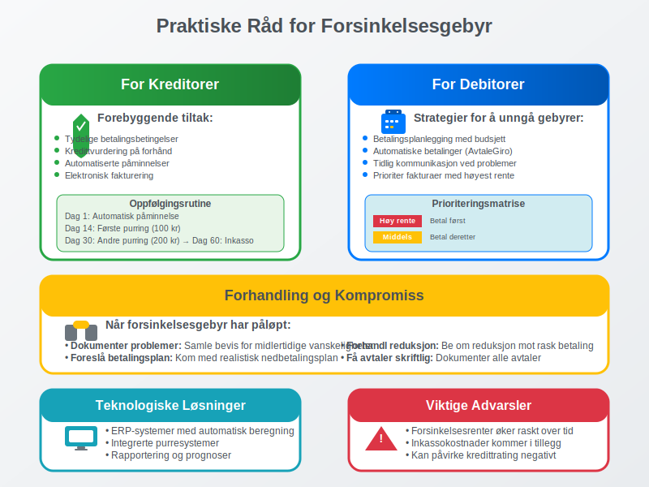
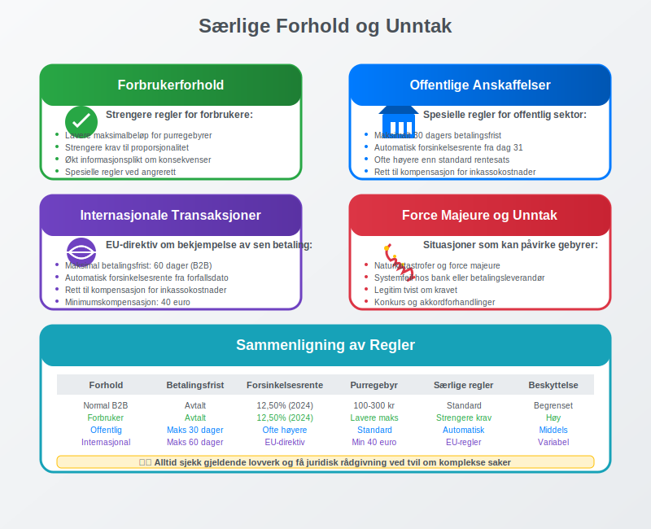
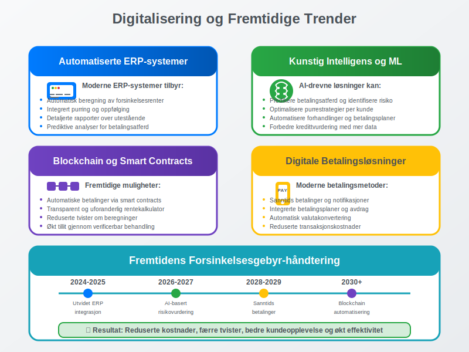

Forsinkelsesgebyr er en kompensasjon som en kreditor kan kreve når en debitor ikke betaler sin gjeld innen avtalt forfallsdato. Dette gebyret, også kjent som morarenter eller forsinkelsesrenter, skal kompensere for den økonomiske belastningen og risikoen som oppstår ved forsinket betaling.
Forsinkelsesgebyr er et viktig verktøy i norsk forretningsliv for å sikre at fakturaer betales i tide og for å beskytte bedrifters likviditet og arbeidskapital.
Lovgrunnlag for Forsinkelsesgebyr
I Norge er forsinkelsesgebyr regulert av forsinkelsesrenteloven og forbrukerkjøpsloven, som setter klare rammer for når og hvor mye som kan kreves.

Hovedprinsipper i Forsinkelsesrenteloven
Forsinkelsesrenteloven fra 1976 (med senere endringer) regulerer retten til forsinkelsesrenter og etablerer følgende prinsipper:
- Automatisk rett: Kreditor har automatisk rett til forsinkelsesrenter fra forfallsdato
- Ingen krav om påminnelse: Retten inntrer uten at debitor må påminnes
- Lovbestemt rentesats: Rentesatsen fastsettes av myndighetene
- Tilleggsgebyr: Mulighet for å kreve rimelige inkassokostnader
Gjeldende Rentesatser
Forsinkelsesrenten fastsettes halvårlig av Finansdepartementet og består av:
| Periode | Referanserente | Tillegg | Total forsinkelsesrente |
|---|---|---|---|
| 1. halvår 2024 | 4,50% | 8,00% | 12,50% |
| 2. halvår 2023 | 4,25% | 8,00% | 12,25% |
| 1. halvår 2023 | 3,75% | 8,00% | 11,75% |
| 2. halvår 2022 | 2,75% | 8,00% | 10,75% |
Beregningsgrunnlag: Referanserenten er gjennomsnittlig foliorente i Norges Bank de siste 6 måneder, pluss et fast tillegg på 8 prosentpoeng.
Typer Forsinkelsesgebyr
Det finnes flere typer gebyrer og kostnader som kan kreves ved forsinket betaling, hver med sine spesifikke regler.

1. Forsinkelsesrenter (Morarenter)
Forsinkelsesrenter er den lovpålagte renten som løper fra forfallsdato til betaling skjer:
- Beregningsgrunnlag: Hovedstolen (ikke inkludert mva)
- Rentesats: Gjeldende forsinkelsesrente fastsatt av myndighetene
- Løpetid: Fra forfallsdato til full betaling
- Automatisk rett: Ingen påminnelse nødvendig
For en omfattende gjennomgang av lovgrunnlag, beregningsmetoder og praktisk håndtering av forsinkelsesrente, se vår detaljerte guide til forsinkelsesrente.
Eksempel på beregning:
- Fakturabeløp: 10 000 kr (eks. mva)
- Forsinkelse: 30 dager
- Forsinkelsesrente: 12,50% p.a.
- Forsinkelsesrenter: 10 000 × 0,125 × (30/365) = 103 kr
2. Purregebyr
I tillegg til forsinkelsesrenter kan kreditor kreve rimelige purregebyrer:
- Første purring: Maksimalt 100 kr
- Andre purring: Maksimalt 200 kr
- Tredje purring: Maksimalt 300 kr
- Inkassovarsel: Maksimalt 100 kr
3. Inkassokostnader
Ved overgang til inkasso kan følgende kostnader kreves:
- Inkassogebyr: Maksimalt 200 kr for krav under 2 000 kr
- Inkassosalær: Prosentsats av hovedkravet (1-15% avhengig av beløp)
- Saksomkostninger: Faktiske kostnader ved rettslige skritt
4. Fakturagebyr
Mange bedrifter krever også fakturagebyr som kan påløpe ved forsinket betaling:
- Administrasjonsgebyr: For ekstra behandling
- Ekspedisjonsgebyr: For spesiell håndtering
- Behandlingsgebyr: For manuelle prosesser
Beregning av Forsinkelsesgebyr
Korrekt beregning av forsinkelsesgebyr krever forståelse av både lovverket og praktiske beregningsmetoder.

Grunnleggende Beregningsformel
Forsinkelsesrenter = Hovedstol × Rentesats × (Antall dager / 365)
Detaljert Beregningseksempel
La oss se på et komplett eksempel:
Fakturadetaljer:
- Fakturabeløp: 25 000 kr (eks. mva)
- Forfallsdato: 1. mars 2024
- Betalingsdato: 15. april 2024
- Forsinkelse: 45 dager
- Gjeldende forsinkelsesrente: 12,50%
Beregning:
- Hovedstol: 25 000 kr (mva beregnes ikke forsinkelsesrenter av)
- Daglig rente: 12,50% ÷ 365 = 0,0342%
- Forsinkelsesrenter: 25 000 × 0,125 × (45/365) = 385 kr
Sammensatt Beregning med Tilleggsgebyrer
Total kostnad ved forsinket betaling:
| Kostnadstype | Beløp | Grunnlag |
|---|---|---|
| Hovedkrav | 25 000 kr | Opprinnelig faktura |
| Merverdiavgift | 6 250 kr | 25% av hovedkrav |
| Forsinkelsesrenter | 385 kr | 45 dagers forsinkelse |
| Første purring | 100 kr | Lovlig purregebyr |
| Andre purring | 200 kr | Lovlig purregebyr |
| Total kostnad | 31 935 kr | Økning: 27,7% |
Beregning for Ulike Tidsperioder
| Forsinkelse | Forsinkelsesrenter (25 000 kr) | Akkumulert kostnad |
|---|---|---|
| 14 dager | 120 kr | 25 120 kr |
| 30 dager | 257 kr | 25 257 kr |
| 60 dager | 514 kr | 25 514 kr |
| 90 dager | 771 kr | 25 771 kr |
| 180 dager | 1 542 kr | 26 542 kr |
| 365 dager | 3 125 kr | 28 125 kr |
Regnskapsføring av Forsinkelsesgebyr
Korrekt regnskapsføring av forsinkelsesgebyr er viktig for både kreditor og debitor.

For Kreditor (Den som Mottar Forsinkelsesgebyr)
Ved påløp av forsinkelsesrenter:
Debet: Kundefordringer (1500) 385 kr
Kredit: Finansinntekter (8050) 385 kr
Ved innbetaling:
Debet: Bank (1920) 31 935 kr
Kredit: Kundefordringer (1500) 31 935 kr
For Debitor (Den som Betaler Forsinkelsesgebyr)
Ved påløp av forsinkelsesrenter:
Debet: Finanskostnader (8150) 385 kr
Kredit: Leverandørgjeld (2400) 385 kr
Ved betaling:
Debet: Leverandørgjeld (2400) 31 935 kr
Kredit: Bank (1920) 31 935 kr
Mva-behandling
Viktige punkter for mva-behandling:
- Forsinkelsesrenter: Ikke mva-pliktige (verken inngående eller utgående)
- Purregebyrer: Ikke mva-pliktige
- Inkassokostnader: Ikke mva-pliktige
- Fakturagebyr: Kan være mva-pliktige avhengig av type
Periodisering og Estimering
For større forsinkelsesbeløp kan det være nødvendig med periodisering:
Månedlig periodisering av forsinkelsesrenter:
Debet: Påløpte renter (1590) 85 kr
Kredit: Finansinntekter (8050) 85 kr
Praktiske Råd for Bedrifter
Effektiv håndtering av forsinkelsesgebyr krever gode rutiner og systemer.

For Kreditorer
Forebyggende tiltak:
- Tydelige betalingsbetingelser: Spesifiser forfallsdato og konsekvenser
- Kredittvurdering: Vurder kunders betalingsevne på forhånd
- Automatiserte påminnelser: Sett opp systemer for automatisk purring
- Elektronisk fakturering: Bruk eFaktura for raskere behandling
Oppfølgingsrutiner:
- Dag 1 etter forfall: Automatisk påminnelse
- Dag 14: Første formelle purring med gebyr
- Dag 30: Andre purring med økt gebyr
- Dag 45: Inkassovarsel
- Dag 60: Overføring til inkasso
For Debitorer
Strategier for å unngå forsinkelsesgebyr:
- Betalingsplanlegging: Bruk budsjett for å planlegge betalinger
- Automatiske betalinger: Sett opp AvtaleGiro der mulig
- Tidlig kommunikasjon: Kontakt kreditor ved betalingsproblemer
- Prioritering: Betal fakturaer med høyest forsinkelsesrente først
Forhandling og Kompromiss
Når forsinkelsesgebyr har påløpt:
- Dokumenter betalingsproblemer: Samle bevis for midlertidige vanskeligheter
- Foreslå betalingsplan: Kom med realistisk nedbetalingsplan
- Forhandl om reduksjon: Be om reduksjon av gebyrer mot rask betaling
- Få avtaler skriftlig: Dokumenter alle avtaler om betalingsutsettelse
Særlige Forhold og Unntak
Det finnes flere særlige forhold som kan påvirke retten til forsinkelsesgebyr.

Forbrukerforhold
Strengere regler for forbrukere:
- Maksimalbeløp: Lavere maksimalbeløp for purregebyrer
- Rimelighetsvurdering: Strengere krav til proporsjonalitet
- Informasjonsplikt: Økt krav til informasjon om konsekvenser
- Angrerett: Spesielle regler ved angrerett og reklamasjon
Offentlige Anskaffelser
Spesielle regler for offentlig sektor:
- Betalingsfrist: Maksimalt 30 dagers betalingsfrist
- Automatisk forsinkelsesrente: Fra dag 31 uten påminnelse
- Høyere rentesats: Ofte høyere enn standard forsinkelsesrente
- Kompensasjonsrett: Rett til kompensasjon for inkassokostnader
Internasjonale Transaksjoner
EU-direktiv om bekjempelse av sen betaling:
- Maksimal betalingsfrist: 60 dager for B2B-transaksjoner
- Automatisk forsinkelsesrente: Fra forfallsdato
- Kompensasjonsrett: Rett til kompensasjon for inkassokostnader
- Minimumskompensasjon: Fast beløp på 40 euro
Force Majeure og Unntakstilfeller
Situasjoner som kan påvirke forsinkelsesgebyr:
- Naturkatastrofer: Kan gi grunnlag for utsettelse
- Systemfeil: Tekniske problemer hos bank eller betalingsleverandør
- Tvistetilfeller: Når det er legitim tvist om kravet
- Konkurs og akkord: Spesielle regler ved insolvens
Digitalisering og Fremtidige Trender
Teknologisk utvikling påvirker hvordan forsinkelsesgebyr håndteres og beregnes.

Automatiserte Systemer
Moderne ERP-systemer tilbyr:
- Automatisk beregning: Kontinuerlig oppdatering av forsinkelsesrenter
- Integrert purring: Automatiske påminnelser og oppfølging
- Rapportering: Detaljerte rapporter over utestående fordringer
- Prognoser: Prediktive analyser for betalingsatferd
Kunstig Intelligens og Maskinlæring
AI-drevne løsninger kan:
- Predikere betalingsatferd: Identifisere risikokunder tidlig
- Optimalisere purrestrategier: Tilpasse oppfølging til kundetyper
- Automatisere forhandlinger: Foreslå betalingsplaner automatisk
- Forbedre kredittvurdering: Mer nøyaktige risikovurderinger
Blockchain og Smart Contracts
Fremtidige muligheter:
- Automatiske betalinger: Smart contracts som utløser betalinger
- Transparent rentekalkulator: Uforanderlige beregninger
- Reduserte tvister: Mindre rom for uenighet om beregninger
- Økt tillit: Transparent og verificerbar behandling
Konklusjon
Forsinkelsesgebyr er et viktig verktøy for å sikre rettidig betaling og beskytte bedrifters likviditet. Forståelse av lovverket, korrekt beregning og riktig regnskapsføring er essensielt for både kreditorer og debitorer.
Viktige takeaways:
- Automatisk rett: Forsinkelsesrenter påløper automatisk fra forfallsdato
- Lovregulert: Rentesatser fastsettes av myndighetene og oppdateres halvårlig
- Kumulativ effekt: Forsinkelsesgebyrer kan raskt øke den totale kostnaden betydelig
- Forebygging: Gode rutiner og systemer kan minimere både risiko og kostnader
Ved å implementere effektive systemer for fakturabehandling, automatiserte påminnelser og tydelige betalingsbetingelser, kan bedrifter redusere både risikoen for forsinkede betalinger og de administrative kostnadene ved oppfølging.
For debitorer er det viktig å prioritere rettidig betaling og kommunisere proaktivt ved eventuelle betalingsproblemer. Dette kan ofte føre til mer fleksible løsninger og reduserte kostnader sammenlignet med å la forsinkelsesgebyrer påløpe ukontrollert.